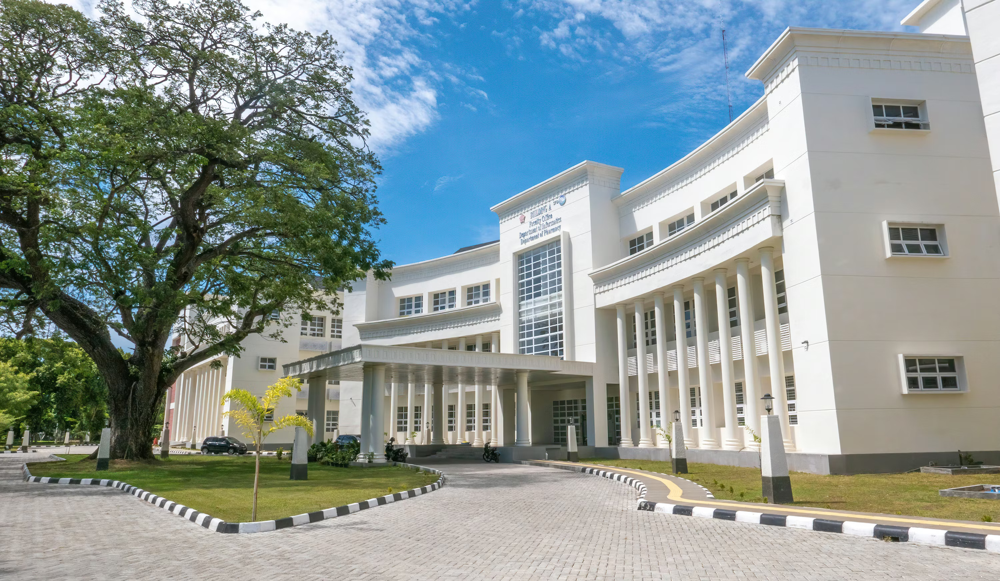
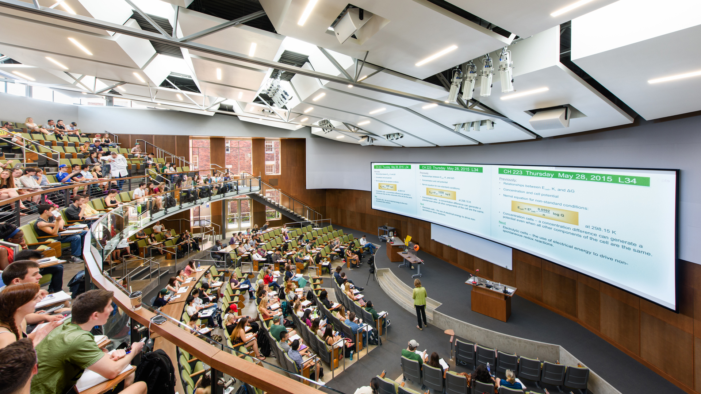

Bharat college of Technology of Science and Humanities · Est. 1924
A research-first institution built around systems thinking, interdisciplinary inquiry and long-term intellectual ambition.
Apply NowBharat college of Technology was founded on the conviction that the world’s most consequential problems cannot be solved from within the boundaries of a single discipline.
The institute integrates science, engineering, philosophy, policy and computation into a unified research culture.
Governance and safety of large-scale AI systems.
Climate modelling and systems engineering.
Bridging biological and digital systems.
Resilience of global technical systems.

Bharat college of Technology develops students capable of reasoning under conditions of uncertainty.
“Bharat college of Technology does not produce graduates. It produces thinkers who happen to have degrees.”